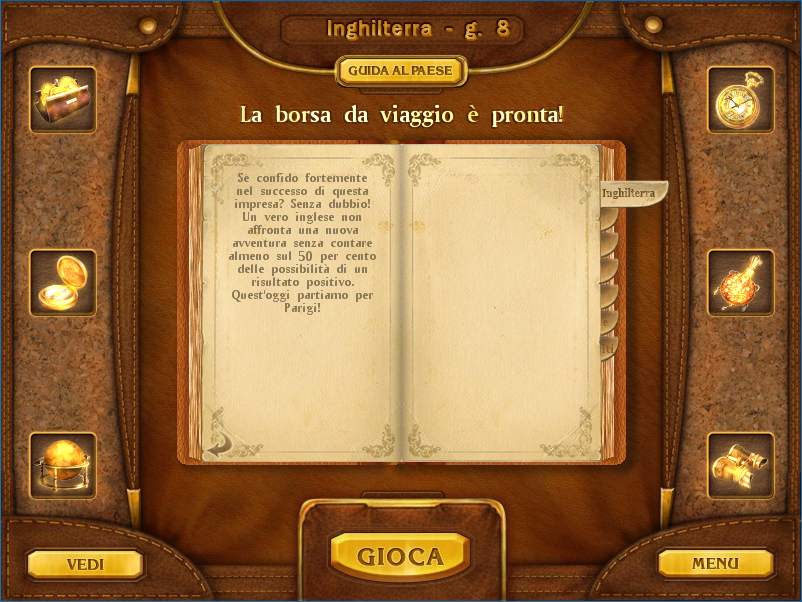

I've made an Italian version of the game Around the World in 80 Days. It contains the original files from the Italian Big Fish demo.
Screenshots



Downloads
Windows
macOS
Installation Tutorials
Windows
Zip File
- Extract the contents of the Around the World in 80 Days ITA.zip file.
- Go where you extracted it, create a shortcut to the game.exe file and put it on the desktop.
Installer
- Run the Around the World in 80 Days.exe installer.
- After finishing to install, go where you installed the game, create a shortcut to the game.exe file and put it on the desktop.
Mac
.app Folder (for Big Fish Games)
- Locate the game Around the World in 80 Days in
/Applications. - Right click the game's icon and choose Show Package Contents.
- Copy the file/folder Around the World in 80 Days.app into
Contents/Resourcesand replace the original.
Resources Folder (for Playrix)
- Locate the game Around the World in 80 Days in
/Applications. - Right click the game's icon and choose Show Package Contents.
- Copy the Resources folder into
Contentsand replace the original.